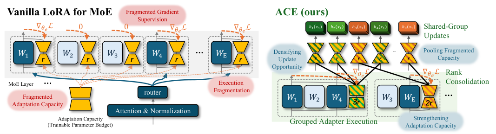

Why it matters왜 중요한가
LoRA was designed for dense layers, where every adapter sees every token. Drop that same design into a sparsely-routed MoE layer and three things quietly break at once.
LoRA는 모든 어댑터가 모든 토큰을 보는 dense 층을 위해 설계됐다. 그 설계를 희소 라우팅이 걸린 MoE 층에 그대로 가져다 놓으면, 세 가지가 동시에 조용히 망가진다.
The paper names them precisely. Capacity: a layer budget split uniformly across E experts gives each one rank B/(E·(din+dout)), so more experts mechanically means a thinner correction per expert. Supervision: an expert's adapter only receives gradient from tokens the router sent it, so with top-k routing each adapter sees roughly k/E of a batch — less, when routing is imbalanced, which it usually is. Execution: every active adapter is two small GEMMs (matrix multiplications), so a modest LoRA budget turns into a swarm of tiny kernel launches that GPUs handle badly. These are not independent bugs; they are three faces of the same decision to keep one adapter per expert.
논문은 이 셋의 이름을 정확히 붙인다. 용량: 층 예산을 E개 전문가에 균일 분배하면 각자 rank가 B/(E·(din+dout))이 되므로, 전문가가 많아질수록 전문가별 보정은 기계적으로 얇아진다. 지도 신호: 어댑터는 라우터가 자기 전문가로 보낸 토큰에서만 gradient를 받는다. top-k 라우팅이면 배치의 대략 k/E만 보고, 라우팅이 불균형하면(보통 불균형하다) 그보다도 적다. 실행: 활성 어댑터마다 작은 GEMM(행렬곱)이 두 번씩 필요하니, 크지 않은 LoRA 예산도 GPU가 잘 처리하지 못하는 자잘한 커널 호출 떼로 변한다. 이건 서로 독립된 버그 셋이 아니라, 전문가마다 어댑터 하나라는 같은 결정의 세 얼굴이다.

By the numbers핵심 숫자
Same budget, three backbones같은 예산, 백본 3종
| Method | OLMoE (1B/7B) | Qwen1.5-MoE (3B/14B) | Moonlight (3B/16B) |
|---|---|---|---|
| LoRA | 74.11 ±0.39 | 79.75 ±0.03 | 79.29 ±0.32 |
| PiSSA | 74.75 ±0.16 | 79.98 ±0.11 | 78.11 ±0.23 |
| EPnG (MoE-aware) | 73.90 ±0.33 | 79.54 ±0.09 | 80.13 ±0.24 |
| ACE | 75.61 ±0.28 | 80.27 ±0.18 | 81.17 ±0.19 |
In one diagram한 장의 그림
The idea in four pieces아이디어를 넷으로 쪼개면
Three fragmentations, one cause
Capacity, supervision and execution all fragment for the same reason: one adapter per expert. The paper measures each. Effective rank (entropy of normalized singular values) shows LoRA-r=2 adapters average 1.77 — they barely use the rank they have. Gradient CV of 1.449 and a 3.18% zero-gradient row rate show the supervision is sparse and lopsided. CUDA profiling shows 106.0K matmul calls where 62.2K would do.
용량·지도 신호·실행이 모두 같은 이유로 조각난다. 전문가마다 어댑터 하나라는 것. 논문은 셋을 각각 측정한다. 유효 rank(정규화된 특이값의 엔트로피)로 보면 LoRA-r=2 어댑터는 평균 1.77이다. 가진 rank조차 거의 못 쓴다. gradient 변동계수 1.449와 3.18%의 gradient가 0인 행 비율은 지도 신호가 희소하고 한쪽으로 쏠렸음을 보여준다. CUDA 프로파일링은 62.2K면 될 행렬곱을 106.0K번 부르고 있다고 말한다.
CKA grouping, on a shared probe set
Linear CKA (centered kernel alignment) on adapter outputs, not on adapter weights — ACE cares whether two adapters act alike, and CKA's scale invariance matters when routing makes output magnitudes wildly uneven. Louvain community detection picks the groups per layer, so no global similarity threshold has to be tuned across layers whose similarity scales differ.
어댑터 가중치가 아니라 어댑터 출력에 선형 CKA(중심화 커널 정렬)를 적용한다. ACE가 궁금한 건 두 어댑터가 비슷하게 작동하느냐이고, 라우팅 때문에 출력 크기가 제각각인 상황에서는 CKA의 스케일 불변성이 중요하다. 그룹은 층별로 Louvain 커뮤니티 탐지가 고르므로, 유사도 스케일이 층마다 다른 상황에서 전역 임계값을 맞출 필요가 없다.
Rank consolidation + shared updates
A group's adapters are replaced by one adapter of rank rg = Σre, initialized from the group's similarity-central member so the swap is not a cold restart. Two effects follow for free: the pooled rank lifts mean effective rank toward what LoRA-r=64 achieves with ~32× more parameters, and the shared adapter now collects gradient whenever any group member is routed.
그룹의 어댑터들이 rank rg = Σre인 어댑터 하나로 대체된다. 초기화는 그룹에서 유사도상 가장 중심인 구성원에서 가져와, 교체가 차가운 재시작이 되지 않게 한다. 여기서 두 효과가 덤으로 따라온다. 모인 rank가 평균 유효 rank를 파라미터를 약 32배 쓰는 LoRA-r=64 수준으로 끌어올리고, 공유 어댑터는 그룹 구성원 중 누구라도 라우팅되면 gradient를 받는다.
Grouped adapter execution
Sharing parameters does not by itself save compute — a naive implementation would still evaluate the same shared adapter once per routed expert. ACE instead computes cg(x) = ΔWgsharex once per active group and reuses it. This is where the wall-clock win comes from: the ablation that keeps consolidated adapters but disables grouped execution scores the same 75.61 while training time goes back up from 1.89 to 2.83 hours.
파라미터를 공유한다고 계산이 저절로 줄지는 않는다. 순진하게 구현하면 같은 공유 어댑터를 라우팅된 전문가마다 한 번씩 계산하게 된다. 대신 ACE는 cg(x) = ΔWgsharex를 활성 그룹당 한 번 계산하고 재사용한다. 실제 시간 이득은 여기서 나온다. 합친 어댑터는 그대로 두고 그룹 실행만 끈 ablation은 점수가 똑같이 75.61인데 학습 시간이 1.89시간에서 2.83시간으로 되돌아간다.
How it works어떻게 작동하나
- Warm up normally. 평범하게 워밍업한다. Train Tinit = 150 steps of ordinary expert-wise LoRA, so each adapter has learned something task-specific to be compared on.보통의 전문가별 LoRA로 Tinit = 150 스텝을 학습한다. 그래야 각 어댑터가 비교할 만한 과제 특화 내용을 익힌 상태가 된다.
- Collect a shared probe set. 공통 프로브 집합을 모은다. Take N = 10,000 hidden states and push them through every expert adapter in the layer regardless of routing, forming each expert's representation matrix Ze.hidden state N = 10,000개를 모아 라우팅과 무관하게 그 층의 모든 전문가 어댑터에 통과시켜, 전문가별 표현 행렬 Ze를 만든다.
- Score and group. 점수를 내고 묶는다. Mean-center, compute pairwise linear CKA, build a weighted expert-similarity graph, and cut it with Louvain at resolution γ = 0.8 to get per-layer groups.평균 중심화 후 쌍별 선형 CKA를 계산하고, 가중 전문가 유사도 그래프를 만들어 resolution γ = 0.8의 Louvain으로 나눠 층별 그룹을 얻는다.
- Consolidate in place. 제자리에서 합친다. Swap each group's separate adapters for one rank-Σre adapter, seeded from the similarity-central anchor with standard LoRA init for the extra rank directions. Backbone weights and the router are left untouched.각 그룹의 개별 어댑터를 rank가 Σre인 어댑터 하나로 교체한다. 초기값은 유사도 중심 앵커에서 가져오고, 늘어난 rank 방향은 표준 LoRA 초기화를 쓴다. 백본 가중치와 라우터는 건드리지 않는다.
- Train with grouped execution. 그룹 실행으로 학습한다. For gate and up projections, evaluate each active group's adapter once and reuse the result across every routed expert in that group; the down projection keeps the expert-wise path.gate와 up 투영에서는 활성 그룹마다 어댑터를 한 번 계산하고 그 그룹의 라우팅된 모든 전문가가 결과를 재사용한다. down 투영은 전문가별 경로를 유지한다.
What to take away그래서, 가져갈 것
This is an unusually cheap win to adopt: no extra parameters, no extra peak memory (98.21 → 98.18 GB on OLMoE), no change to the backbone or router, and training gets ~1.4× faster rather than slower. Code is at UbiquitousAILab/ACE.
도입 비용이 유난히 싸다. 추가 파라미터 없음, 최대 메모리 증가 없음(OLMoE에서 98.21 → 98.18 GB), 백본과 라우터 변경 없음, 그리고 학습이 느려지는 게 아니라 약 1.4배 빨라진다. 코드는 UbiquitousAILab/ACE에 있다.
The framing is worth stealing even if the method isn't: "where should a fixed low-rank budget be spent?" is a different and often better question than "how do we allocate rank per module?". Here the answer is that the natural unit of adaptation is a cluster of experts, not an expert — expert-level separation is inherited from the architecture, not demanded by the task.
방법을 안 쓰더라도 문제 설정은 훔칠 만하다. "고정된 저랭크 예산을 어디에 쓸 것인가"는 "모듈별로 rank를 어떻게 배분할 것인가"와 다른, 그리고 대개 더 나은 질문이다. 여기서의 답은 적응의 자연스러운 단위가 전문가 하나가 아니라 전문가 군집이라는 것이다. 전문가 단위 분리는 과제가 요구한 게 아니라 아키텍처에서 물려받은 것이다.
The effective-rank measurement is the most transferable diagnostic here. LoRA-r=2 adapters averaging 1.77 effective rank while LoRA-r=64 reaches 46.8 says the bottleneck in fragmented settings is real and measurable — a cheap check to run before assuming your own rank budget is being used.
여기서 가장 널리 써먹을 수 있는 진단 도구는 유효 rank 측정이다. LoRA-r=2 어댑터가 평균 유효 rank 1.77인데 LoRA-r=64는 46.8에 닿는다는 건, 조각난 설정에서의 병목이 실재하고 측정 가능하다는 뜻이다. 내 rank 예산이 실제로 쓰이고 있다고 가정하기 전에 돌려볼 만한 싼 점검이다.